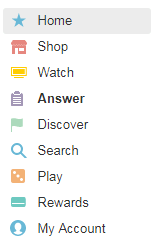

Pesquisas pagas

Clique nas imagens para obter mais informações.
Apesar de todas as possibilidades de gerar dinheiro em Swagbucks, oferece uma interface simples e muito estética, então você verá o menu de opções que você poderá observar no lado esquerdo da plataforma uma vez que você entrou, bem como a explicação de cada um das suas opções.

Home - Início:
Esta seção corresponde à cena que veremos sempre que inserimos nossa conta, nos quais podemos ver formas populares de ganhar SB, bem como outras formas de gerar SB, como pesquisas e ofertas.

Shop - Comprar:
Com esta opção, acessamos a seção de reembolso, ofertas e cupons; por meio do reembolso, poderemos obter SB para fazer compras on-line, estar sujeito aos termos e condições de cada loja, para poder ver esses termos e mais informações, é suficiente colocar o mouse na oferta em questão para poder ver suas informações extras; deve-se notar que podemos filtrar os resultados através do menu de categorias também no lado esquerdo; Finalmente, encontraremos as ofertas e cupons que nos permitem obter descontos por meio de códigos e também de reembolso.

Watch - Assistir:
Aqui podemos acessar apresentações, vídeos individuais ou listas de vídeos, para os quais recebemos bônus quando você vê-los, precisando gastar 45 segundos em cada vídeo para poder mudar para o próximo.
Answer - Responda:
Aqui podemos acessar todas as pesquisas disponíveis no momento, indicando o tempo aproximado a ser investido na resposta a uma pesquisa, bem como a quantidade de bônus SB, deve-se notar que se você não pode responder a uma pesquisa de desqualificação, ou seja não cabem no perfil do assunto do estudo, seremos pagos 1 SB, com um máximo de 10 SB por desqualificação por dia; Se você tem duvidas sobre este assunto, convidamos você a rever mais a seção

Discover - Descobrir:
Nesta seção, podemos obter SB como um bônus ao registrar ou subscrever serviços diferentes, alguns pagamentos gratuitos e outros; Você também pode obter mais informações de cada oferta colocando o mouse na oferta específica.

Search - Procurar:
Por medio de la cual al hacer uso de la barra de búsqueda de Swagbucks podremos recibir SB como bonificación, obteniendo 20 SB por la primera vez que hagamos una búsqueda a través de Swagbucks; en las demás búsquedas la bonificación será aleatoria, algunas veces obteniendo bonificación y otras sin obtener bonificación; también en esta sección se nos ofrece la opción de establecer el motor de búsqueda de Swagbucks como nuestro buscador de elección.


Play - Jogar:
Ser capaz de ganhar SB por cada quantidade de dinheiro que gastamos em um jogo online, além de poder jogar mini-jogos Swagbucks com os quais podemos ganhar até 10 SB.


Há também uma barra superior em Swagbucks, como você pode ver na seguinte imagem através da qual teremos acesso a:

Search the web & earn - Procure na web e ganhe
Ao nos permitir pesquisar pelo mecanismo de pesquisa Swagbucks e, como explicamos acima, podemos ganhar SB em troca.
SWAG code - Código SWAG:
Neste espaço, podemos introduzir códigos publicados emdiferentes lugares para trocar recompensas; para informações do pagador, somos apresentados o link

Daily goal - Objetivo diário:
Aqui, podemos acessar um bônus extra se ganharmos uma certa quantidade de SB por dia, facilmente alcançável, esse objetivo diário é reiniciado todos os dias e quando você clica
 |
 |
Refer & Earn - Referir e ganhar:
Esta seção corresponde ao sistema de referência, através do qual você pode convidar seus amigos para se juntar a Swagbucks; por ser um pouco extenso e para sua conveniência, falaremos sobre o sistema de referência abaixo.

Inbox - Caixa de entrada:
Através do qual estaremos informados de novas pesquisas, ofertas e apresentações, bem como o tempo restante para ganhar.

Como extra, você também pode notar no lado esquerdo da tela, ao inserir qualquer uma das seções diferentes, seja os vídeos, pesquisas ou ofertas; uma lista de tarefas, pelo qual podemos receber um bônus completando pelo menos 6 das atividades da lista, além de obter um bônus ao completar as 8 atividades.

Finalmente, para poder resgatar os SBs, podemos acessar esta seção através de 3 links; Para o primeiro, você deve notar que, por exemplo, quando você entra em qualquer uma das seções, suponha a seção de pesquisas, você verá a seguinte cena no lado esquerdo; Ao colocar o mouse na opção, será exibido o seguinte menu, com as mesmas opções vistas anteriormente, mas com a opção extra
 |
 |
Os outros links estão em um menu lateral, também localizado à esquerda e no menu drop-down que aparece ao colocar o mouse no equilíbrio; em ambos os casos, para trocar as SB, devemos clicar em
 |
 |
Desta forma, teremos as seguintes maneiras de trocar o SB, como cartões de presente, cartões PayPal pelo valor de 25 USD, 50 USD, 100 USD e 250 USD e também nos permite a maravilhosa opção de contribuir para uma fundação de caridade.


Se a sua intenção é reivindicar o seu pagamento através do PayPal, você deve clicar no cartão, neste caso, 25 USD e, em seguida, clicar em Resgatar e, finalmente, você deve inserir seu primeiro e último nome, onde nos pedimos para garantir que nosso nome e o sobrenome corresponde ao nome e sobrenome da nossa conta do PayPal e também confirmou a referida conta; também informando-nos que o pagamento será feito em um período de tempo entre 10 e 14 dias úteis.


Agora, é a vez do sistema de referência, como você sabe, para acessá-lo, você deve clicar em

Desta forma, você pode convidar seus amigos através de um e-mail, também através de um link exclusivo e pessoal; também publicando esse link através de diferentes redes sociais ou fazendo uso de banners publicitários; tudo a sua escolha; tendo que ter cuidado para não enviar spam.

O processo de registro é bastante simples, só é necessário inserir o e-mail e a senha desejados, e depois clicar no e-mail de confirmação em sua caixa de entrada, abaixo você pode encontrar um botão que permitirá que você se registre..


Quais são as questões de pré-qualificação?
Estas são as perguntas que nos são feitas dentro de uma pesquisa para determinar se somos bons sujeitos de estudo para a pesquisa específica; isto é, podemos inserir uma pesquisa, fazer algumas perguntas e, de acordo com as respostas que damos, podemos acessar a pesquisa ou não; Aqui também aplica o que dissemos antes, sendo uma pessoa de consumo, seremos mais propensos a acessar a pesquisa, no entanto, em muitas ocasiões, não seremos capazes de qualificar as pesquisas sendo esta a mais normal, e é por isso que não existe Por que se incomodar ou se desencorajar. Também recomendamos ter paciência porque a maior parte do tempo as perguntas de pré-qualificação são as mesmas perguntas que preencheram no seu perfil, porque os clientes, ou seja, aqueles que realizam os inquéritos buscam consistência nas respostas e não são levados ao ilumine a informação que damos; Finalmente, vale ressaltar que, nas questões de pré-qualificação, não demoraremos mais de 5 minutos para responder, uma vez que seria injusto investir 30 minutos em questões de pré-qualificação para finalmente ser desqualificado.
Se eu não viver em países aceitos, posso usar VPN?
Nós não recomendamos porque, se você usar um serviço VPN pago ou gratuito, você usará um endereço IP de um país que seja aceito, até que tudo corre bem, o problema é que você não será o único a usar esse novo endereço IP, pois que haverá muitas pessoas mais com a conta Swagbucks fazendo uso do mesmo endereço IP. Bem, poderíamos dizer que sim, você pode usar a VPN, mas nós só estaremos aproveitando suas boas intenções, no entanto, nós o convidamos a continuar navegando em my-money.online, certamente encontrará algo que você gosta e que você pode fazer com total segurança.
Eu não tenho conta do PayPal
Não há problema, a primeira coisa que você precisa fazer é ir para a página do PayPal, nós não fornecemos o link para sua própria segurança, uma vez lá, no topo, você encontrará as seguintes opções:

Aqui, depois de clicar em

Mais tarde, você será solicitado seu gênero e gostos e, em seguida, seus dados pessoais e, finalmente, eles vão perguntar se você deseja associar seu cartão bancário, podendo adiar se você quiser fazê-lo clicando em